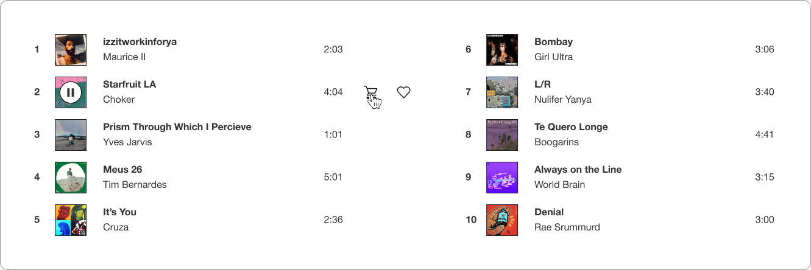
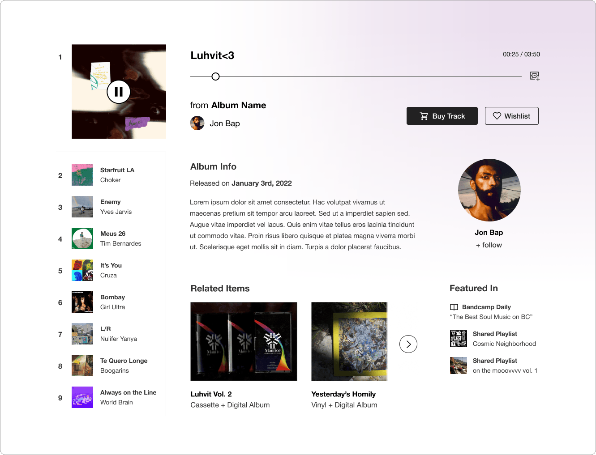
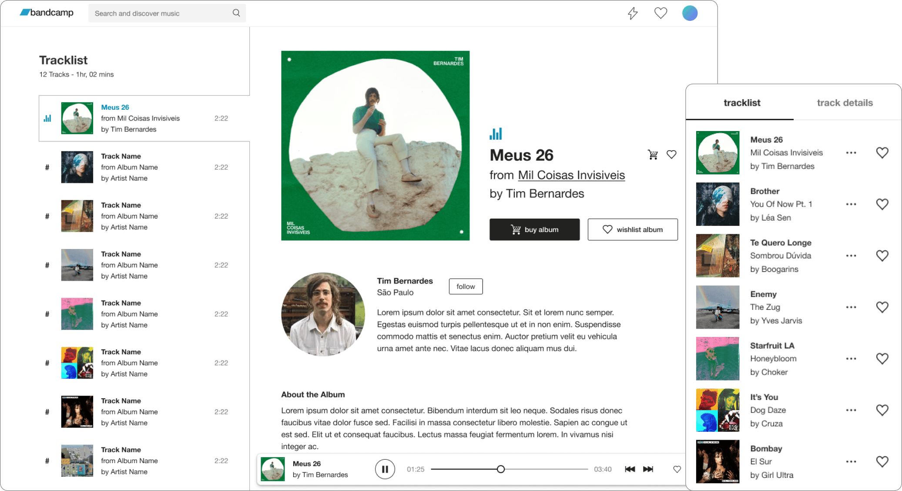
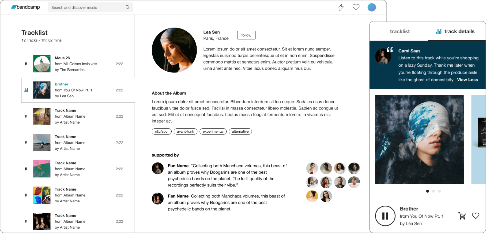

Overview
(~10 mins)
01. Context
In mid-2023 Bandcamp’s playlist feature was only available on app, and with a significant percentage of users being desktop only, we needed to build this popular feature for web. I knew my recent design system work could help speed up this process, and joined Lydia Laitung as a co-lead for this project. During the planning process we noticed that playlist users were purchasing less music than the average Bandcamp fan. As a company dedicated to making sure artists are fairly compensated, the team felt strongly about understanding why, and about designing clear purchase affordances into our playlist experience.
With the scope of this project suddenly broadened, the team strategized around turning this problem into a differentiator. We envisioned playlists as an explicit pathway to artist support - a familiar listening experience enhanced to funnel users into Bandcamp’s various checkout flows. We conducted research to answer why playlists users spent less, insights Lydia (playlist app) and I (playlist web) would use to design and refine the listening-to-purchase experience for our playlists.
02. Constraints
Knowledge Gaps
At the outset of this project we lacked insight into how fans were using playlists. It would be easy to rely on the assumption that Bandcamp playlists were filling the same set-and-forget function that similar features on other music sites do, but we knew enough about our users to see how important it was to get a clearer picture of their collection and listening behaviors. Addressing the purchase gap required us to develop our understanding here.
Picking Our Spots
While we were committed to making substantial improvements and building for the web, we were clear that we weren’t designing a new feature. A healthy pace required us to work within the boundaries of the app work Lydia and the playlist team had already done, and to pick the most impactful areas for strengthening purchase signals. This meant sticking to existing playback functionality and not disrupting a fairly standard listening experience.
03. Discovery
Lydia and I started the process by conducting user interviews aimed at clarifying the role of playlists in the listening habits of fans. We recruited and interviewed a sample group of casual, active, and super-users (30 total), and our study revealed that casual fans used playlists in the ways we expected. They added tracks they enjoyed, and pressed play when they wanted to soundtrack personal moods or activities. They rarely made purchases because playlists lived in their pockets.

Casual fan feedback regarding their listening habits
On the contrary, active and super-users treated playlists like shopping carts, actively discovering and safeguarding interesting music for later purchasing. Their feedback suggested that our feature simply wasn’t presenting clear pathways for them to make these purchases. They also were clear about the real emotional hurdle that purchasing presented - purchasing music on a playlist was a much steeper investment than just streaming it. This suggested that while we clearly couldn’t change the mental models of of our users, we had a real opportunity to guide more involved fans to the checkout flow with better purchase signaling and by helping them justify purchase decisions.

Active and Super fan feedback regarding collection and purchasing
04. Process
We used this research to develop several hypotheses, but wanted to clarify how light or involved our approach needed to be. Lydia and I decided to test two approaches with different degrees of complexity:
Shifting the Balance
We were a marketplace meant to promote music purchasing, not a streaming service that relied on passive listening. Our playlists couldn’t rely on the same action groups and information hierarchy as other products. To that end, we proposed a simple approach where finding fan actions like following, wishlisting, and buying would be easy and wouldn’t require following links or diving into contextual menus. These minimal improvements wouldn’t fully address emotional friction, but would make it clear that songs were purchasable.

An early design jam for fan-forward support actions
Stocking the Merch Table
In the second approach we would prominently feature artist and track metadata, available merch, and include fan feedback as a form of social proof. The hypothesis was that we could help users overcome purchase friction by providing context that would empower them to click “buy” with confidence. This solution required more design and engineering effort, but would be a more permanent solution to our emotional and wayfinding concerns. I led ideation, sketching, and prototyping for this approach.

An early design jam for the merch table approach
Sketching and Prototyping
I examined features on the site that presented purchase options in the context of a larger experience, and took note of how they approached this balance. Several of these features were desktop-first, so I would have to adapt their dense combinations of product rails, release context, and CTAs for a primarily mobile experience. This would mean condensing track context, relying on icon buttons for secondary actions, and reducing available purchase options.
I ideated on where and how to display this information, sketching then prototyping several potential solutions including an extended player. The most successful approach in in-house testing was a “track details” alternate view, that didn’t require tons of scrolling, presented a clear mode shift, and didn’t require users to learn vastly different ways of interacting with playlists. In it, I reused a preview component from our Search and Discover feature to house purchase options.
An unsuccessful experiment with an expanded player pattern
An early prototype of the track details pattern
User Testing
I designed a motion prototype of this solution to user test alongside Lydia’s work. While we couldn’t test for the moment a user decides to purchase, we gathered valuable insight into what design decisions made purchasing easier and more attractive to users.
We learned that the most important factor was action visibility, and displaying the buy button inline with the track number and name was the clearest signal we could offer. Users also intuitively checked the track details view they enjoyed a track, a sign that were interested in wishlisting or purchasing. However, they often remarked that some metadata and several of the presented purchase options felt irrelevant. They wanted to see track, album, and vinyl options, but were confused by the inclusion of genre tags and some physical merch items. Additionally, featuring comments left by recent supporters was seen as a valuable time-saver for users who often checked supporter details on album pages before purchasing.
05. Solution
I used these insights to prioritize refinements for desktop and mobile, designing with three key principles in mind:
Visibility
I surfaced low-intent fan actions in the track list view and player bars, and prioritized purchase actions for users who signaled purchase curiosity by navigating to track details. This approach would avoid overwhelming casual listeners with persistent upsells, while giving interested users an intuitive area to purchase music that inspired them.

Mobile and Desktop screens showing fan actions across feature surfaces
Relevance
I reined in the metadata and purchase options presented in the track details view, making sure to only include what would be relevant to the track a user was viewing. I replaced the discarded metadata with an artist follow action that would allow users to deep dive at their discretion. I also placed the relevant purchase options in a carousel that wouldn’t overwhelm users with the appearance of too many choices at once.
Focused metadata and purchase options on mobile
Resonance
I leaned into the emotional value that user comments provided by adding user images, and making sure to clearly distinguish them from the rest of the track details. This humanized what was previously just disembodied praise, and gave users a visual cue to stop and read fan accounts that might inspire a wishlist, follow, or purchase.

Highlighting track comments as social proof
06. Results & Takeaways
I co-led a cross-platform effort that brought an increasingly popular feature to more users and expanded the number of features under our design system. Throughout the course of this project I quickly adapted to changing scope and made research-supported design adjustments that honored constraints and directly improved user recognition of purchase options.
Cross-functional collaboration was crucial, and Lydia and I worked effectively to refine insights and concepts, align approaches, and define independent work streams that suited our strengths. Together we turned unexpected feature requirements into a listen-to-purchase experience that was familiar and compelling to users, establishing a standard for adopting popular streaming features to Bandcamp’s business model.
Overview
(5 mins)
01. Context
Playlists have become the standard listening format for many music listeners, which would be fine if they didn’t incentivize passive listening and anonymize the artists working hard to create music. This reduced listener-to-artist surface area means less financial support for musicians, and as a company dedicated to making sure that artists get their fair share, the playlist team at Bandcamp felt strongly that it was important to imagine a different kind of playlist. One that attempts to answer the question “what if a playlist encouraged listeners to become paying fans of the artists whose music they enjoy?”
02. Discovery
Clarifying Listener Behavior
We started the process by conducting user interviews aimed at clarifying the role of playlists in the listening habits of various types of bandcamp users. Our 15p study revealed that while casual users used bandcamp playlists in the ways we expected - to soundtrack personal moods or activities - they also expressed wanting to listen to the playlists of taste-makers they respected. On the other hand, super-users treated playlists like shopping carts, safe-guarding potentially interesting tracks or projects for later purchasing.
Understanding Listener Sentiment
Both user types expressed a mixture of frustration and understanding regarding play limits - it was inconvenient to have playback blocked for a track they liked, but limits also served as a powerful incentive to purchase music. There was a pride/sense of accomplishment associated with “unlocking” tracks via purchase, a powerful user sentiment that was worth preserving even if we had to tinker around the edges.
03. Solution
After a bit of competitive research and concept refining, we gathered that placing the spotlight on playlisted artists was just a matter of shifting the balance between playlist/track metadata and actions. We worked to accomplish this in three ways:
Balancing Metadata
We designed easily toggleable tracklist and track detail views, giving users the ability to dive into the particulars of a track they enjoy without disrupting the expected playlist experience. We opted to toggle the track detail view on playback, shifting attention immediately to the world the track lives in.

Humanizing The Experience
finish me!
Highlighting Value
We prominently featured the track, album art and associated merch to reinforce their value in relation to the playlist, a subtle but important signal for users. We also made supportive actions (wishlisting, purchasing, and navigating to the album) the most prominent CTAs in the experience.